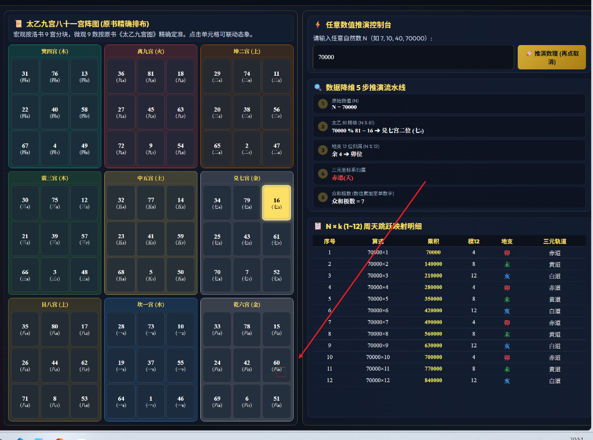

在中国传统天文学与易学数理脉络中，存在一套以数字和图形来度量天地时空的完备模型。当代学者梁致堂先生在《易经数理秘笈》中，整理并复原了《九宫纪周天 360°气数一览大表》以及《太乙九宫八十一阵图》。
初读此类文献时，往往容易受限于传统术语而感到晦涩。如果将其剥离掉神秘化的语汇，从现代几何学与代数学的角度加以审视，其本质是一套将“天球连续运动度数（时间周期量）”与“地面九宫离散分布（空间定域量）”进行经纬正交映射的古典代数系统。
本文旨在以平铺直叙的方式，系统梳理该模型的基础定义、代数规律，并结合具体的数值计算实例，阐明其内在严密的推演逻辑。
《周髀算经》卷上开篇载：“圆出于方，方出于矩，矩出于九九八十一。故折矩以为勾广三，股修四，径隅五。” 这段论述在古典数学中是一套明确的度量准则：
┌────────────────────────────────────────┐
│ 古典量天测地尺 │
└────────────────────────────────────────┘
/ \
/ \
【天球时间尺度：圆】 【地面空间尺度：方】
• 尺度：周天 360 度 • 尺度：太乙 81 方阵
• 属性：连续旋转周期 • 属性：定域九宫格点
• 测算：黄道/赤道视运动 • 测算：洛书九宫嵌套
天象的运行以日、月、五星在天球上的视运动为表征，呈现周而复始的旋转特性。古人以浑天之法将天球划分为 360 等分（周天度数），作为量度天道时间演进的标准刻度。
地表的空间方位以观察者为中心向外延展。古人首先依洛书建立九宫基准（戴九履一、左三右七、二四为肩、六八为足），在此基础上，每个宫位再细分 9 个定域子单元，形成 $9 imes 9 = 81$ 个离散网格，称之为“八十一矩”。
为了直观呈现数值在时空中的流转，整个推演系统可由下图的三栏交互架构完整表达：

该架构自左至右分为三大核心模块：
1. 左栏·三维浑天天象仪：直观展示赤道（天系）、黄道（地系）、白道（万物系）三套正交且互相倾斜的空间轨道，以及十二地支所对应的空间方位。
2. 中栏·太乙九宫八十一宫阵图：宏观依洛书九宫分块，微观依太乙排布 81 个单元格，每个格点均具备唯一的空间编号与角标。
3. 右栏·任意数值推演控制台：将任意输入的自然数 $N$，经过 5 步降维算法，分别定位于空间宫位、时间地支与运动轨道。
在九宫周天表中，每一个宫位均构建为一个 $9 imes 9$ 的正交乘法表。横轴代表时间演化（公差为 9），纵轴代表空间延展（公差为 9）。
在几何学中，一维线与一维线相加仍然是一维线；唯有横轴（经）与纵轴（纬）正交相乘，维度才从一维线跃迁为二维平面。汉字中的“矩”字，左为“巨”（工匠画方之矩尺），右为“矢”（光阴离弦之飞箭），本身即寓意空间与时间的相互交织。
以【一宫】为例，其横轴与纵轴的基础数列均为：
$$1, 10, 19, 28, 37, 46, 55, 64, 73$$
当纵横两两相乘时，每一行的横向差值如下表所示：
| 行号 | 纵坐标 ($y$) | 横向展开序列 | 该行横向公差 ($d_r$) |
|---|---|---|---|
| 第 1 行 | $1$ | $1, 10, 19, 28, 37, 46, 55, 64, 73$ | 9 |
| 第 2 行 | $10$ | $10, 100, 190, 280, 370, 460, 550, 640, 730$ | 90 |
| 第 3 行 | $19$ | $19, 190, 361, 532, 703, 874, 1045, 1216, 1387$ | 171 |
| 第 4 行 | $28$ | $28, 280, 532, 784, 1036, 1288, 1540, 1792, 2044$ | 252 |
| 第 5 行 | $37$ | $37, 370, 703, 1036, 1369, 1702, 2035, 2368, 2701$ | 333 |
观察公差列的连续差值：
$$\Delta d = 90 - 9 = 171 - 90 = 252 - 171 = 333 - 252 = \mathbf{81}$$
代数通式推导：
设横轴第 $c$ 列的数值为 $x_c = x_0 + (c-1) \cdot 9$；
第 $r$ 行的纵坐标为 $y_r$，第 $r+1$ 行的纵坐标为 $y_{r+1} = y_r + 9$。
则第 $r$ 行相邻两列之差为：
$$d_r = y_r \cdot x_{c+1} - y_r \cdot x_c = y_r \cdot 9$$
第 $r+1$ 行相邻两列之差为：
$$d_{r+1} = y_{r+1} \cdot 9 = (y_r + 9) \cdot 9 = y_r \cdot 9 + 81 = d_r + \mathbf{81}$$
由此可得，表格纵向每向下延伸一行，其横向步进的公差必然恒定增加 81。这正是原书所言“下一行之数，皆为本行数加 81 之矩数”的严格代数本质。
在大表整整 81 个单元格中，各宫选定了一行作为与周天度数相接轨的基准行。其选取规则严格遵照：
$$ ext{基准行纵坐标} = K \cdot 10$$
其中 $K$ 为当前宫的序数（一宫为 1，二宫为 2，……，九宫为 9）。例如：
- 一宫：纵坐标为 $1 imes 10 = 10$（第 2 行）
- 二宫：纵坐标为 $2 imes 10 = 20$（第 3 行）
- 三宫：纵坐标为 $3 imes 10 = 30$（第 4 行）
- 四宫：纵坐标为 $4 imes 10 = 40$（第 5 行）
选取此行的原因在于：
1. 末位出“0”以契合天度：算筹相乘通常生成零散数值，只有包含因子 10 的乘积，末位才显现十进制整倍数“0”，具备量化为天体几何度数的基准形式。
2. 公差与周天象限完美咬合：该行横向公差为 $K \cdot 10 imes 9 = K imes 90^\circ$。
这一公差随着宫位的上升，构建出一组步步跃升的周天阶梯：
| 宫位 | 宫序 ($K$) | 基准行数值 | 横向公差 ($K imes 90^\circ$) | 对应的天体周天几何意义 |
|---|---|---|---|---|
| 坎一宫 | 1 | 10 | 90° | 走出第一象限（春分至夏至，一季圆满） |
| 坤二宫 | 2 | 20 | 180° | 天球赤道大圆之直径，阴阳分界 |
| 震三宫 | 3 | 30 | 270° | 跨越三个象限，万物发育齐备 |
| 巽四宫 | 4 | 40 | 360° | 四时运行一周天，360 度闭环达成 |
| 中五宫 | 5 | 50 | 450° | $360^\circ + 90^\circ$，元气重启，生机不绝 |
| 乾六宫 | 6 | 60 | 540° | $360^\circ + 180^\circ$，乾坤气数高阶交媾 |
| 兑七宫 | 7 | 70 | 630° | $360^\circ + 270^\circ$，肃杀收敛，功成身退 |
| 艮八宫 | 8 | 80 | 720° | 双周天合璧（$360^\circ imes 2$），阴阳各转一圈 |
| 离九宫 | 9 | 90 | 810° | 九九归一（$81 imes 10^\circ$），方圆终极大圆满 |
为说明该体系的实用运算过程，以图 1 控制台中输入的数值 $N = 70000$ 为例，进行完整的 5 步降维推演。
设输入自然数为：
$$N = 70000$$
将数值纳入地面太乙 81 方阵中进行模算：
$$70000 \div 81 = 864 \quad ext{余} \quad \mathbf{16}$$
- 定位结果：余数为 16，即落入太乙第 16 号单元格。
- 宫位查对：在太乙八十一宫阵图中，16 号单元格位于兑七宫（宏观右侧），在其九格微观中位列第二位，其严谨角标为 (七₂)。
天道以十二时辰、十二地支记录方位与时序，将数值纳入十二支循环：
$$70000 \div 12 = 5833 \quad ext{余} \quad \mathbf{4}$$
- 定位结果：余数 4 对应第 4 位地支，即【卯位】（东方木位）。
传统三元天象模型将十二地支划分为三组互相交织的运行轨道：
- 赤道天系（四正）：子、午、卯、酉（余数 1, 7, 4, 10）
- 黄道地系（四墓）：丑、未、辰、戌（余数 2, 8, 5, 11）
- 白道万物系（四隅）：寅、申、巳、亥（余数 3, 9, 6, 12）
因 $N=70000$ 之模 12 余数为 4（卯位），故其在三维动力学体系中直接归属于：
$$\mathbf{赤道（天系）}$$
众和极数是将数值的各位数字依次累加，直至化简为单个数字：
$$70000
ightarrow 7 + 0 + 0 + 0 + 0 = \mathbf{7}$$
- 数理涵义：其极数恒等于 7，不仅在代数上完全收敛，而且与步骤 2 中求得的“兑七宫”空间属性形成完美的数学同构闭环。
当 $N=70000$ 沿时间轴以步长 $k$（$1 \le k \le 12$）连续跃进时，其在三元轨道上的循环轨迹完全呈现出精准的几何对称：
| 序号 ($k$) | 乘式 | 乘积 | 模 12 余数 | 对应地支 | 三元轨道归属 |
|---|---|---|---|---|---|
| 1 | $70000 imes 1$ | 70,000 | 4 | 卯 | 赤道 (天) |
| 2 | $70000 imes 2$ | 140,000 | 8 | 未 | 黄道 (地) |
| 3 | $70000 imes 3$ | 210,000 | 12 | 亥 | 白道 (万物) |
| 4 | $70000 imes 4$ | 280,000 | 4 | 卯 | 赤道 (天) |
| 5 | $70000 imes 5$ | 350,000 | 8 | 未 | 黄道 (地) |
| 6 | $70000 imes 6$ | 420,000 | 12 | 亥 | 白道 (万物) |
| 7 | $70000 imes 7$ | 490,000 | 4 | 卯 | 赤道 (天) |
| 8 | $70000 imes 8$ | 560,000 | 8 | 未 | 黄道 (地) |
| 9 | $70000 imes 9$ | 630,000 | 12 | 亥 | 白道 (万物) |
| 10 | $70000 imes 10$ | 700,000 | 4 | 卯 | 赤道 (天) |
| 11 | $70000 imes 11$ | 770,000 | 8 | 未 | 黄道 (地) |
| 12 | $70000 imes 12$ | 840,000 | 12 | 亥 | 白道 (万物) |
从表中可见，乘积在轨道上的演变呈现出严谨的 【卯(赤道) ➔ 未(黄道) ➔ 亥(白道)】 三元等差循环，此即传统数理所谓“亥卯未三合木局”的代数动力学模型。
除了单宫内的公差规律外，各宫相乘在宏观九宫上的落点遵循严格的模 9 群论特征。
| 宫位 | 乘一宫 | 乘二宫 | 乘三宫 | 乘四宫 | 乘五宫 | 乘六宫 | 乘七宫 | 乘八宫 | 乘九宫 |
|---|---|---|---|---|---|---|---|---|---|
| 一宫 (1) | 1 | 2 | 3 | 4 | 5 | 6 | 7 | 8 | 9 |
| 二宫 (2) | 2 | 4 | 6 | 8 | 1 | 3 | 5 | 7 | 9 |
| 三宫 (3) | 3 | 6 | 9 | 3 | 6 | 9 | 3 | 6 | 9 |
| 四宫 (4) | 4 | 8 | 3 | 7 | 2 | 6 | 1 | 5 | 9 |
| 五宫 (5) | 5 | 1 | 6 | 2 | 7 | 3 | 8 | 4 | 9 |
| 六宫 (6) | 6 | 3 | 9 | 6 | 3 | 9 | 6 | 3 | 9 |
| 七宫 (7) | 7 | 5 | 3 | 1 | 8 | 6 | 4 | 2 | 9 |
| 八宫 (8) | 8 | 7 | 6 | 5 | 4 | 3 | 2 | 1 | 9 |
| 九宫 (9) | 9 | 9 | 9 | 9 | 9 | 9 | 9 | 9 | 9 |
综上所述，《九宫纪周天 360°气数一览大表》并非凭空拟构的神秘谶纬，而是一部结构高度自洽的古典数理模型：
- 它以 360°圆周 作为量天的时间尺；
- 以 81 矩方阵 作为量地的空间网格；
- 借助 横纵相乘 完成时空维度的跃迁；
- 利用 平方数乘 10 导出与周天象限精准咬合的公差体系；
- 最终通过 模 81 与模 12 降维，将任意气数精准锚定在三维天球与九宫阵列之中。
通过现代数学语言的还原，我们得以拨开笼罩其上的历史迷雾，见证古代先民在没有现代计算设备的条件下，依靠纯粹的代数对称与几何空间思维，所建立起的那套精微而庞大的古典时空度量体系。